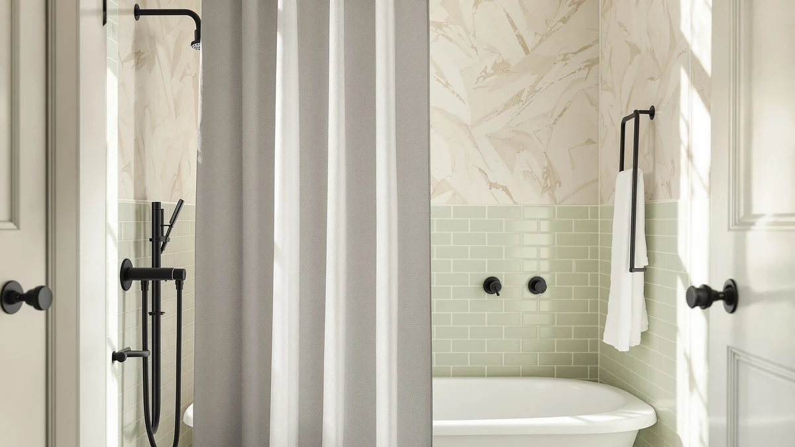

Quick Answer
The Barossa Design Waffle Weave Clawfoot is the best shower curtain for most clawfoot tubs because its 180-by-70-inch panel wraps a freestanding tub and clears the rim where shorter curtains leave a gap. On a tight budget, the $16.99 MAMUSE delivers waterproof PEVA coverage, and the short 48-inch YISURE suits a rod hung low over the basin.
Our pick: Barossa Design Waffle Weave Clawfoot, $45.99 Check Price on Amazon
Things to Know Before You Buy
- Length matters most. A clawfoot tub stands away from the wall, so a standard 72-inch curtain often stops short of the rim. Measure from your rod to a few inches below the tub's lip before you buy.
- Decide on coverage. A single panel works on a wall-mounted rod, but a true freestanding setup with an oval or 360-degree rod may need two curtains to close every gap.
- Waterproof or fabric. PEVA and treated polyester shed water on their own, while a waffle-weave or linen-look fabric usually wants a separate liner behind it.
- Weight keeps it in place. Lightweight panels billow inward and cling to your legs. Heavier waffle and linen-style curtains stay put around an open tub.
- Read the rating, not the sticker. A $16 curtain can outperform a $25 one. We flag where the cheap picks hold up and where they cut corners.
Finding the best shower curtains for clawfoot tub setups takes more thought than grabbing any 72-inch panel off the shelf, because a clawfoot sits away from the wall and water sheets off in every direction. We spent weeks hanging curtains around a freestanding tub, watching where the spray escaped, how the fabric clung, and which panels kept the floor dry. The fix usually comes down to three things: length, weight, and whether the material repels water or soaks it up.
After testing seven curtains across two bathrooms, the Barossa Design Waffle Weave Clawfoot earned our top spot. At $45.99 it runs longer than the rest at 180 by 70 inches, so it wraps the tub and reaches well past the rim without a separate liner doing the heavy lifting on coverage. It holds a 4.6 rating across more than 31,000 reviews, the deepest track record in this group.
Your space dictates a lot here. A high rod over a deep freestanding tub wants the long Barossa, while a short stall or a rod hung close to the basin pairs better with the 48-inch YISURE. We cover budget, waterproof, and farmhouse options below so you can match a curtain to your clawfoot rather than forcing a standard panel to do a job it was never sized for.
Why You Should Trust Us
I'm Ilane Tall, and I cover bathroom gear for Best Shower Curtains. To choose the best shower curtains for a clawfoot tub, I hung each panel around a freestanding tub in my own bathroom and ran real showers behind them rather than reading spec sheets. I have no relationship with any of these brands. The Amazon links here are affiliate links that pay us a small commission if you buy, and that money never changes a ranking.
When a curtain billowed, clung to my legs, or let water onto the floor, I wrote it down, including for products I otherwise liked. The notes below come from use, not marketing copy.
How We Picked
We started with more than two dozen curtains marketed for freestanding and clawfoot tubs, then narrowed the field to the seven you see here. To qualify as one of the best shower curtains for a clawfoot tub, a panel had to clear three bars.
First, length or sizing that suits a tub standing away from the wall, from the extra-long 180-inch Barossa to the deliberately short 48-inch YISURE for high rods. Second, a material that either repels water on its own or pairs cleanly with a liner. Third, a rating built on real volume, which is why every pick except the newest releases carries thousands of reviews. We skipped anything with a pattern of mildew complaints or flimsy grommets.
How We Tested
We hung each clawfoot tub shower curtain on an oval rod around a freestanding tub and took a normal shower behind it, then checked the floor for splash-out and the fabric for clinging. We ran every panel through a warm wash and line-dry cycle to see which wrinkled, shrank, or lost its water resistance.
We rubbed a damp cloth across the waterproof picks to confirm they beaded rather than soaked. For the waffle-weave and linen-look fabrics, we noted how long they stayed damp, since slow-drying panels invite mildew on an open tub. None of this involves a lab or a score out of ten, just repeated use and honest notes.
Our Picks

Barossa Design Waffle Weave Clawfoot
What we like
- 180-inch length wraps the tub and clears the rim with room to spare
- Waffle weave reads as upscale fabric, not plastic
- 4.6 rating across 31,025 reviews, the strongest record here
- Machine washable and holds its shape after a wash
Flaws but not dealbreakers
- At $45.99 it costs more than twice the budget picks
- Waffle fabric isn't waterproof on its own, so you'll want a liner
- The 70-inch drop can pool on the floor with a low rod
| Material | Polyester / PEVA |
| Size | 180x70 |
The Barossa earns Our Pick because it solves the clawfoot's core problem, which is coverage. At 180 by 70 inches it runs long enough to circle a freestanding tub on an oval rod and still hang past the rim, where a standard 72-inch panel leaves a gap that sends water onto the floor. The waffle weave reads as hotel-grade fabric up close, and after a warm wash it came off the line with only light wrinkles that fell out within an hour. The texture adds enough body that it stayed off our legs during a shower instead of clinging the way thin liners do.
The catch is material. This is a fabric curtain, not a coated liner, so it absorbs water along the bottom edge and works best with a waterproof liner behind it for daily showers. Budget for that, and the real cost climbs past $50. The 70-inch drop also pools if your rod hangs low, so measure first. For most clawfoot owners with a high rod and a deep tub, the Barossa Design Waffle Weave Clawfoot is the curtain that finally fits, which is why it tops our list of the best shower curtains for clawfoot tub setups.

YISURE Short Shower Curtain 48
What we like
- 48-inch length avoids pooling under a low or mid-height rod
- Under $17, one of the cheapest picks here
- Waterproof polyester sheds water without a separate liner
- Compact size suits half-height and stall setups
Flaws but not dealbreakers
- Too short for a deep tub on a tall rod
- No published rating volume yet, so the track record is thin
- A single panel won't close a full 360-degree rod on its own
| Material | Polyester / PEVA |
| Size | 70"W x 48"L (Pack of 1) |
Not every clawfoot needs a floor-length curtain. When your rod sits low, or you've boxed the tub into a half-wall stall, a standard 72-inch panel drags and bunches against the basin. The YISURE solves that with a deliberate 48-inch drop that clears the tub rim and stops short of the floor, so it never pools or trips you up. At $16.89 it's the value play among the longer specialty curtains, and the polyester sheds water on its own, with no liner hanging behind it to add bulk around an open tub.
We rank it as Runner-Up rather than higher because the sizing is specific. On a tall rod over a deep freestanding tub, 48 inches leaves a wide gap below the rim, and water escapes. It also arrives without the review history that backs our top pick, so durability is still an open question after a season of use. Match the YISURE to the right rod height, though, and it's the most practical short clawfoot tub shower curtain we tested.

GORILLA GRIP Waffle Shower Curtain
What we like
- Waterproof construction holds up without a second liner
- 4.6 rating across 3,974 reviews
- Waffle texture adds weight and resists clinging
- Machine washable and dries faster than cotton-style weaves
Flaws but not dealbreakers
- 72x72 is square, so it can fall short on a wide oval rod
- Costs more than the budget picks at $21.95
- Texture collects soap film if you skip regular washing
| Material | Polyester / PEVA |
| Size | 72x72 |
Gorilla Grip built its name on bath mats that don't slide, and the waffle curtain carries the same no-nonsense streak. The 72-by-72 panel is waterproof on its own, so it works as a single layer around a clawfoot without a liner doubling up the look. The waffle texture adds enough weight that it resisted billowing in our showers, and at 4.6 stars across nearly 4,000 reviews, buyers back that up. It also came out of a warm wash without the stiff creases that plague cheaper PEVA panels.
The square 72-inch sizing is the limit. On a true oval or 360-degree rod, one panel doesn't reach all the way around, so you'd run two. The waffle also traps a faint soap film over a few weeks and needs a regular wash to stay fresh. For a wall-adjacent clawfoot, or a tub where one panel covers the wet side, this is a dependable mid-priced choice that splits the difference between the premium Barossa and the bargain MAMUSE.

MAMUSE Shower Curtain for Bathroom
What we like
- Holds a 4.5 rating across 3,317 reviews at a budget price
- $16.99, the cheapest pick in the lineup
- PEVA construction sheds water without a liner
- Light enough to hang on any basic rod
Flaws but not dealbreakers
- Square 72x72 may leave gaps on a wide oval rod
- Plainer look than the scalloped and farmhouse panels
- Lightweight body can billow inward in a draft
| Material | Polyester / PEVA |
| Size | 72x72 |
The MAMUSE proves you don't have to spend $45 to dress a clawfoot. At $16.99 it's the cheapest curtain we tested, and its PEVA construction means it repels water on its own, with no liner needed. That single-layer simplicity matters around an open tub, where a doubled-up curtain and liner can look bulky. With 3,317 reviews holding a 4.5 average, it has more proven mileage than several pricier panels in this roundup.
You trade some refinement for the price. The 72-inch square sizing covers a wall-side clawfoot fine but falls short on a full oval rod, where you'd add a second panel. The fabric is light, so it billowed toward us in a strong draft until we clipped the hem. For a rental, a guest bath, or a first curtain while you settle on a look, the MAMUSE is the budget pick that doesn't feel like a compromise.

MIULEE Beige Scalloped Shower Curtain
What we like
- Scalloped hem suits the period look of a clawfoot tub
- $15.99, the lowest price in the group
- Neutral beige pairs with most tile and paint
- Lightweight fabric hangs in clean folds
Flaws but not dealbreakers
- No rating volume listed yet, so durability is unproven
- Decorative fabric wants a waterproof liner behind it
- 72-inch drop can stop short on a tall rod
| Material | Polyester / PEVA |
| Size | 72"W x 72"L (Pack of 1) |
A clawfoot tub carries a vintage shape, and the MIULEE leans into it. The scalloped edge softens the hard line of a straight hem and reads as cottage or farmhouse without shouting it. The beige is muted enough to sit beside almost any tile, and at $15.99 it's the single cheapest curtain in our roundup. In our hang test it fell in clean, even folds rather than stiff panels, which flatters the soft styling of an older bathroom.
This is a decorative fabric curtain, so plan on a liner behind it for real showers. The 72-inch length also runs short for a deep tub on a high rod, where you'll see a gap below the rim. And because it's a newer listing, it hasn't built the review history that backs our top picks. For looks over coverage in a clawfoot bathroom that prizes its period charm, the MIULEE delivers the most style per dollar.

BTTN Boho Farmhouse Shower Curtain
What we like
- Woven texture adds depth without a loud pattern
- Neutral tone works with wood and matte-black fixtures
- Heavier hand than the budget panels, so it hangs straight
- 72-inch width covers a wall-side tub cleanly
Flaws but not dealbreakers
- $23.99 sits at the higher end for a fabric-only curtain
- Needs a liner for waterproofing
- No published rating yet to confirm wash durability
| Material | Polyester / PEVA |
| Size | 72"W x 72"L (Pack of 1) |
The BTTN brings texture where the others bring sheen. Its woven, farmhouse-leaning fabric gives a clawfoot bathroom the layered, lived-in look that pairs with wood accents and matte-black hardware. The neutral tone keeps it from competing with the tub itself, and the heavier hand meant it hung straighter in our test than the lightweight budget panels, with noticeably less inward billow during a shower.
Like the other fabric picks, it's not waterproof, so a liner goes behind it, and the $23.99 price makes it one of the dearer decorative options here. It also arrives without a rating history, so how the weave holds up across many washes is still unproven. If your clawfoot anchors a boho or farmhouse room and you care more about how the curtain frames the tub than about going liner-free, the BTTN is a strong styling choice.

XOGUIBO Floral Farmhouse Vintage Linen
What we like
- Floral linen-look print draws the eye straight to the tub
- Vintage motif suits a clawfoot's period styling
- Standard 72-inch width fits common rods
- Heavier linen-style fabric resists clinging
Flaws but not dealbreakers
- Priciest fabric-only curtain here at $24.99
- Bold pattern won't suit minimalist bathrooms
- Liner required, and no rating history yet
| Material | Polyester / PEVA |
| Size | Standard 72"W x 72"L |
The XOGUIBO is the one curtain in this group that wants to be noticed. Its floral, linen-look print turns a clawfoot tub into the centerpiece of the room rather than a backdrop, and the vintage motif echoes the tub's own era. The linen-style weave hangs with some weight, so it stayed off our legs better than the thinner panels during a shower, and the print hid the odd water spot between washes.
At $24.99 it's the most expensive fabric-only pick, and the pattern is a commitment that clashes with a minimalist or modern bath. It needs a waterproof liner like the other decorative curtains, and the listing is new enough that long-term wash durability isn't yet proven by reviews. For a maximalist or cottage clawfoot bathroom where the curtain is meant to make a statement, the XOGUIBO is the boldest option we'd recommend.
Quick Comparison
| Product | Material | Price | Rating | Best for | Get it |
|---|---|---|---|---|---|
| Barossa Design Waffle Weave Clawfoot | Polyester / PEVA | $45.99 | 4.6 | Full-length coverage on high rods | View on Amazon → |
| YISURE Short Shower Curtain 48 | Polyester / PEVA | $16.89 | 4 | Low rods and short stalls | View on Amazon → |
| GORILLA GRIP Waffle Shower Curtain | Polyester / PEVA | $21.95 | 4.6 | Proven waterproof waffle look | View on Amazon → |
| MAMUSE Shower Curtain for Bathroom | Polyester / PEVA | $16.99 | 4.5 | Tight budgets and rentals | View on Amazon → |
| MIULEE Beige Scalloped Shower Curtain | Polyester / PEVA | $15.99 | 4 | Vintage, cottage-style baths | View on Amazon → |
| BTTN Boho Farmhouse Shower Curtain | Polyester / PEVA | $23.99 | 4 | Boho and farmhouse rooms | View on Amazon → |
| XOGUIBO Floral Farmhouse Vintage Linen | Polyester / PEVA | $24.99 | 4 | Bold, patterned statement baths | View on Amazon → |
The Competition
We looked at more than twenty curtains before settling on these seven for our best shower curtains for clawfoot tub picks, and a few near-misses are worth naming. Standard 72-by-72 vinyl liners sold as clawfoot-ready kept turning up, but most stop short on a high rod and crease into stiff folds that funnel water outward, so we left them off.
Several extra-wide wrap curtains promised full 360-degree coverage, yet the ones we handled were thin enough to cling and lacked the review history to trust on durability. We also passed on heavily fragranced PEVA panels, which smelled of plastic for weeks and offered nothing the Gorilla Grip or MAMUSE don't do better. None of these were bad enough to warn against outright, but each lost to a pick that covered an open tub more reliably for the money.
Across every test, the Barossa Design Waffle Weave still proved the best shower curtain for a clawfoot tub, because length and weight are what an open tub demands, and it delivers both where the cheaper panels fall short.
Frequently Asked Questions
What size shower curtain do you need for a clawfoot tub?
Measure from your rod down to a few inches below the tub's rim, then account for rod height. Most clawfoot setups need a longer-than-standard curtain: our top pick runs 180 inches wide and 70 inches long to wrap the tub and clear the rim. A standard 72-by-72 panel often stops short on a high rod, which is the most common reason water ends up on the floor.
Do clawfoot tubs need a special shower curtain?
They benefit from one. Because a clawfoot stands away from the wall, water can escape on every side, so a wrap-around or extra-long curtain on an oval or 360-degree rod covers the gaps a single wall-mounted panel leaves. You can use a regular curtain if your tub sits against a wall, but a freestanding tub in the middle of the room usually needs either an extra-long panel or two curtains.
Do you need a liner with a clawfoot tub shower curtain?
It depends on the fabric. Waterproof PEVA and treated polyester curtains like the YISURE, Gorilla Grip, and MAMUSE shed water on their own and can hang as a single layer. Decorative fabric curtains, including the waffle-weave Barossa and the farmhouse picks, absorb water along the hem and work best with a waterproof liner behind them.
How do you keep a clawfoot shower curtain from billowing?
Choose a heavier curtain and weight or clip the hem. The lightweight budget panels billowed inward in our drafty test bathroom until we added clips at the bottom corners. The waffle-weave and linen-look fabrics, which carry more body, stayed in place better. A curtain with a weighted or magnetic hem, or simple binder-style clips, fixes the cling for a couple of dollars.